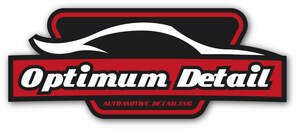

Trade Mark Journal No.2025/034 22 August 2025
UK00004247917 12 August 2025 (37,40)

- Class 37
- Automotive refinishing; Maintenance or repair of automotive vehicles; Automobile repair; Automobile polishing; Automobile reconditioning services; Automobile detailing; Automobile undercoating services; Automobile painting; Repair of automobiles; Garage services for automobile repair; Automobile cleaning; Automobile repair and maintenance; Car wash; Car washing; Car cleaning; Car maintenance; Car valet services; Garage services for motor vehicle repair; Motor vehicle wash; Vehicle painting; Vehicle wash; Wash (Vehicle -); Motor vehicle trim repair; Vehicle detailing; Vehicle cleaning; Vehicle washing; Automobile cleaning and car washing; Upholstery cleaning services; Vehicle washing services; Vehicle wash services; Polishing [cleaning] of vehicles; Vehicle upholstery and repair services; Cleaning of upholstery; Cleaning of vehicles; Motor vehicle cleaning and polishing; Cleaning and polishing of motor vehicles; Cleaning services; Hygienic cleaning [vehicles]; Leather cleaning and repair; Cleaning of motor vehicles; Cleaning of automobiles; Deodorising of upholstery; Deodorising services; Leather care, cleaning and repair; Cleaning, care and repair of leather; Automobile washing; Sanitising of upholstery; Washing of vehicles; Vehicle polishing; Polishing (Vehicle -); Cleaning of leather; Application of surface coatings; Buffing and polishing; Polishing (cleaning); Sanding; Spray painting of metals; Painting of metal surfaces to prevent corrosion; Spray painting; Removal of marine growths from ship's hulls; Valeting services relating to industrial cleaning; Maintenance of aircraft; Abrasive cleaning of surfaces; Abrasive cleaning of metallic surfaces; Application of security films to glazing; Coating [painting] services; Paint work; Installation of automobile accessories; Motor vehicle rustproofing; Motor vehicle maintenance; Painting of motor vehicles; Repair or maintenance of two-wheeled motor vehicles; Anti-rust treatment for motor vehicles; Anti-rust treatment of motor vehicles; Motor land vehicle cleaning services; Battery charging service for motor vehicles; Cleaning of textiles; Maintenance and repair of motorcycles; Cleaning of machines; Auto body repair services; Automobile body repair and finishing for others; Upholstery repair; Painting of vehicles.
- Class 40
- Tinting of car windows; Metal polishing; Metal coating; Polishing; Abrasive polishing; Glass polishing; Polishing of metals; Abrasive polishing of metal surfaces; Polishing of stainless steel; Stainless steel polishing services; Vinyl wrapping of vehicles.
Optimum Detail Ltd